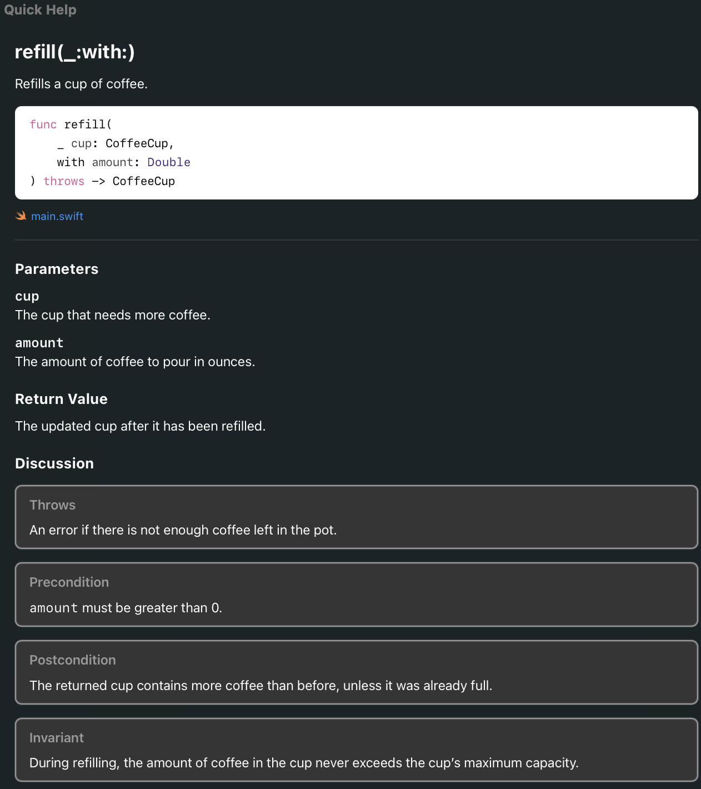

Most everything here is stolen from the following sources. I am just trying to consolidate the information I acutally use so I can stop having to dig around these pages. Markup Formatting Reference Formatting Reference: Formatting Quick Help MarkupFormatting Reference: Markup Overview
Marking up your functions makes them look profesh inside Xcode. You should know about these three sections:
/**
Refills a cup of coffee.
- Parameters:
- cup: The cup that needs more coffee.
- amount: The amount of coffee to pour in ounces.
- Returns: The updated cup after it has been refilled.
- Throws: An error if there is not enough coffee left in the pot.
- Precondition: `amount` must be greater than 0.
- Postcondition: The returned cup contains more coffee than before, unless it was already full.
- Invariant: During refilling, the amount of coffee in the cup never exceeds the cup’s maximum capacity.
*/
func refill(_ cup: CoffeeCup, with amount: Double) throws -> CoffeeCup {
precondition(amount > 0, "Amount must be greater than 0.")
// implementation
}
- cup: will appear as a parameter inside the parameter section along with - amount: .
After the Throws section you can specify a general description as well as call outs that
will appear inside that description.
And then you put it all together and it looks a little something like this

Inside a comment you can use the following syntax which results in formatted Quick Help.
* | + | - Attention: description
optional continuation of description
G
If you don't want to have to type out all of this manually every time you can take advantage of snippets in xcode. Here is a really detailed one I came up.
I assigned this snippet to doc so when I type that in Xcode it automatically inserts this massive block and lets me tab
through the different sections.
/** <#What this does, why it exists, and any important context a reader should know.#> - Parameters: - <#param1#>: <#What this parameter represents.#> - <#param2#>: <#What this parameter represents.#> - Returns: <#What value or effect this produces.#> - Invariant: <#What always remains true, if applicable.#> - Precondition: <#What must be true before use, if applicable.#> - Postcondition: <#What is guaranteed after use, if applicable.#> - Note: <#Any non-obvious design choice, caveat, or implementation detail.#> - See Also: <#Related symbol, if useful.#> */
Shorter version bound to dsh
/** <#What this does and why it exists.#> */
For Variables bound to dvr
/** <#What this property represents and why it exists.#> - Invariant: <#What is always true about this property, if applicable.#> */
For Todo items bound to tos
// TODO: <#What still needs to be done.#>
For longer Todo itmes bound to tom
/** - TODO: <#What still needs to be done.#> <#Optional continuation with more detail, constraints, or context.#> */
Attention Author Authors Bug Complexity Copyright Custom Callout Date Example Experiment Important Invariant Note Precondition Postcondition Remark Requires See Also Since Version Warning